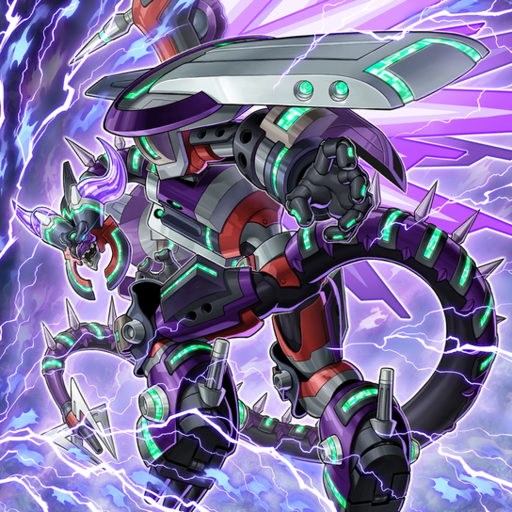
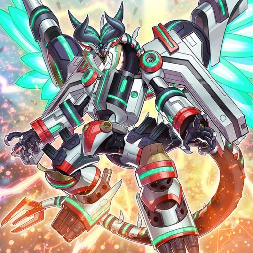
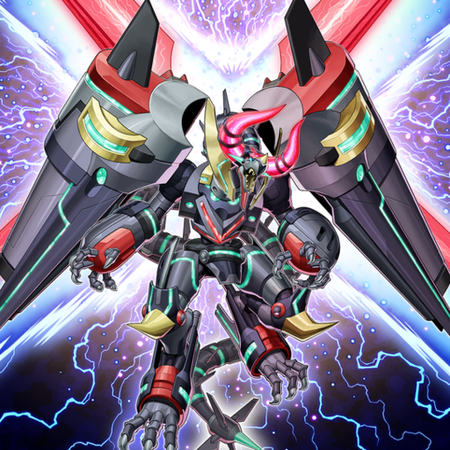
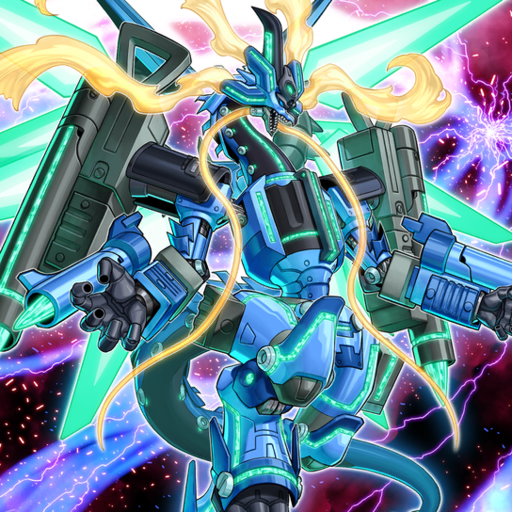

<!DOCTYPE html>
<html>
    <title>HTML + CSS</title>
</html>
    <header>
    Learning CSS @ ZettaCamp
    </header>
<hr>
    <head>
        <link rel="stylesheet" href="taskno2.css">
    </head>
    <body>
        <h2>BORRELOAD DRAGON - DRAGON WITH MULTIPLE MODES</h2>
        <p>
            The ace card of Revolver from Yu-Gi-Oh! VRAINS, Borreload Dragon, gained other variants as the anime progressed (and one more after the anime concludes), representing other special summoning methods used in the VRAINS anime.
            <br>Each of them has an extra word added with the same letter as their respective special summon method; in the original their name are stylized with the capital letter. Each also gains color scheme associated with the special summoning cards.
            <br><br>Below are four variants of Borreload Dragon.
        </p>
        <div class="row">
            <div class="column">
                <div class="card">
                    
                        <div class="container">
                            <h4>Borreload Furious Dragon</h4>
                            <p>Fusion-summoned variant. Can destroy opponent cards and revive a DARK Link monster.</p>
                        </div>
                </div>
            </div>
            <div class="column">
                <div class="card">
                    
                        <div class="container">
                            <h4>Borreload Savage Dragon</h4>
                            <p>Synchro-summoned variant. Gains attack points and counters from equipping a Link monster.</p>
                        </div>
                </div>
            </div>
            <div class="column">
                <div class="card">
                    
                        <div class="container">
                            <h4>Borreload eXcharge Dragon</h4>
                            <p>Xyz-summoned Borrel variant. Cannot be targeted by other monster effects.</p>
                        </div>
                </div>
            </div>
            <div class="column">
                <div class="card">
                    
                        <div class="container">
                            <h4>Borreload Riot Dragon</h4>
                            <p>Ritual-summoned variant. Can negate special summons and retrieve cards back.</p>
                        </div>
                </div>
            </div>
        </div>
    </body>
<hr>
    <footer>
    Learning CSS @ ZettaCamp
    </footer>